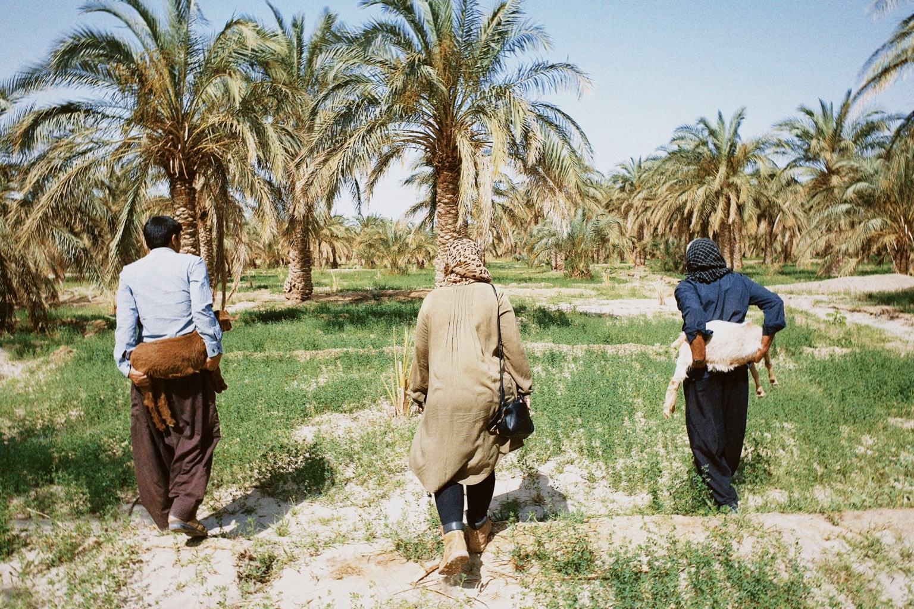
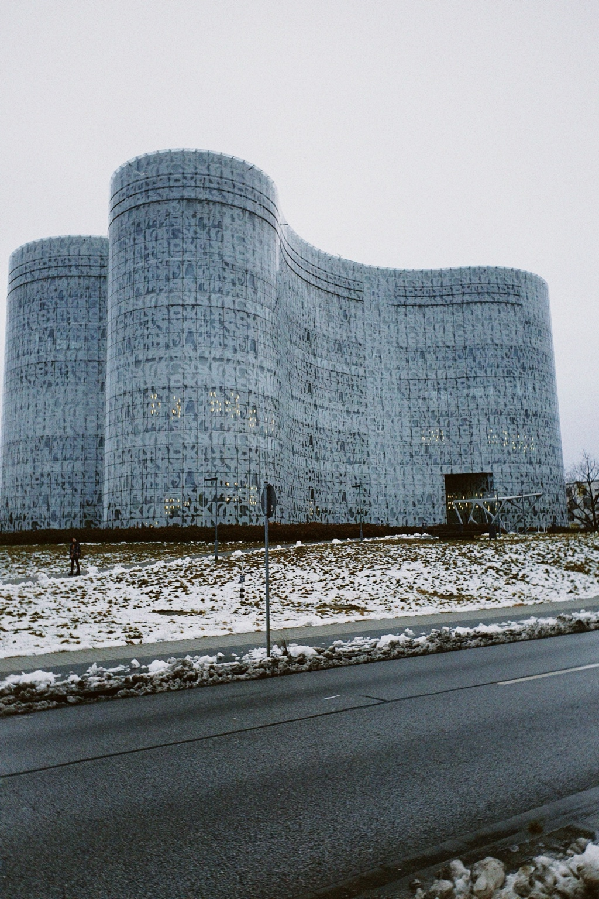
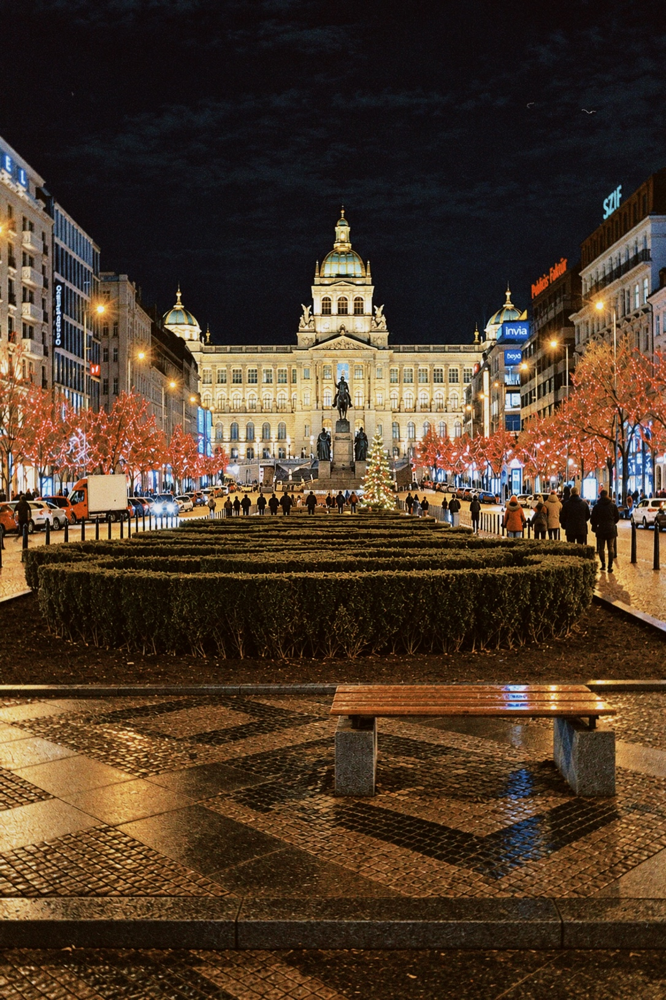
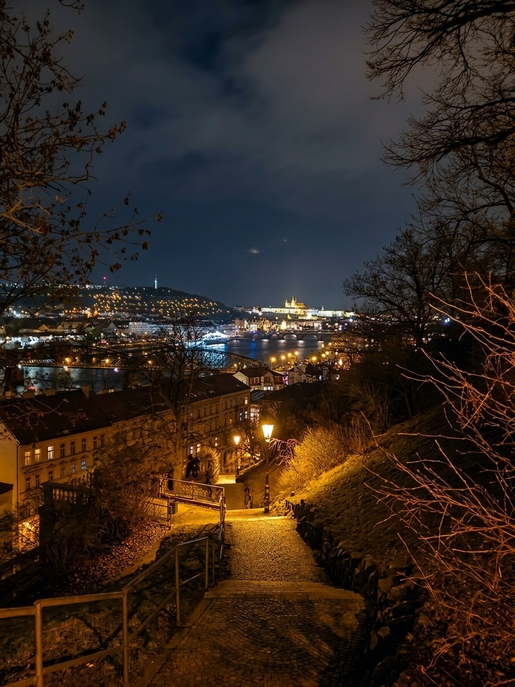
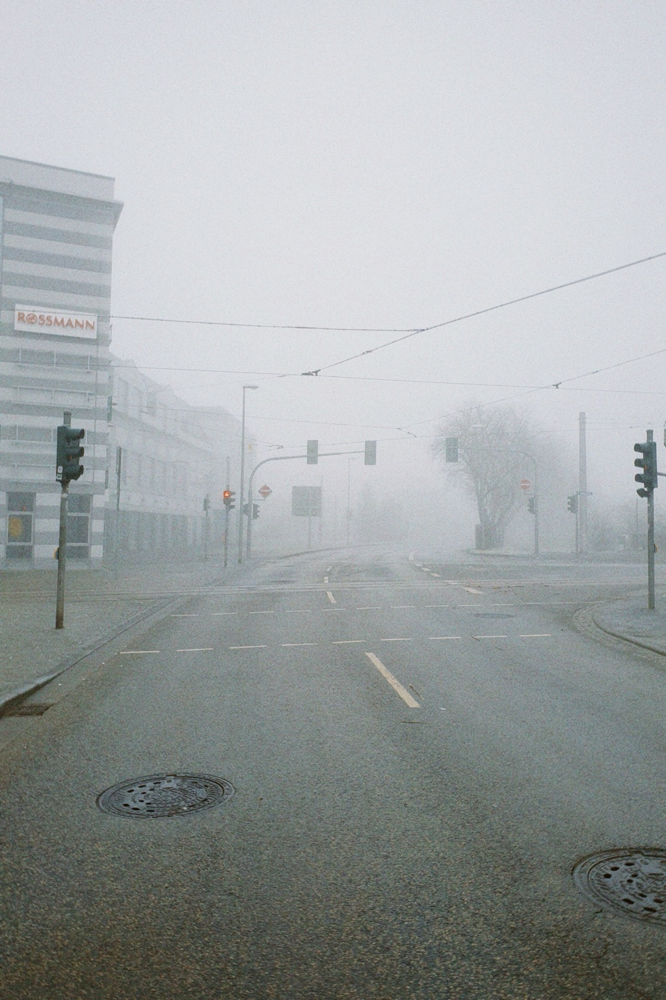
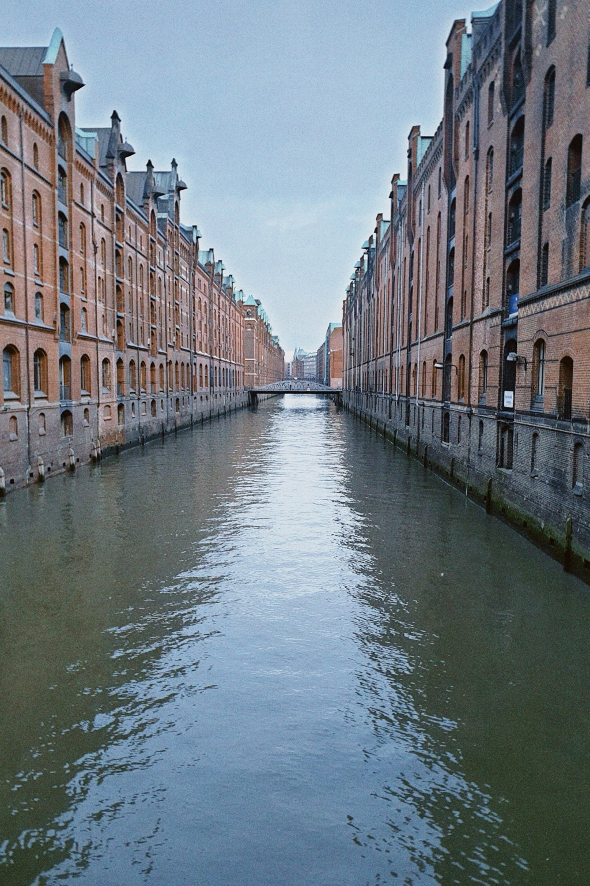
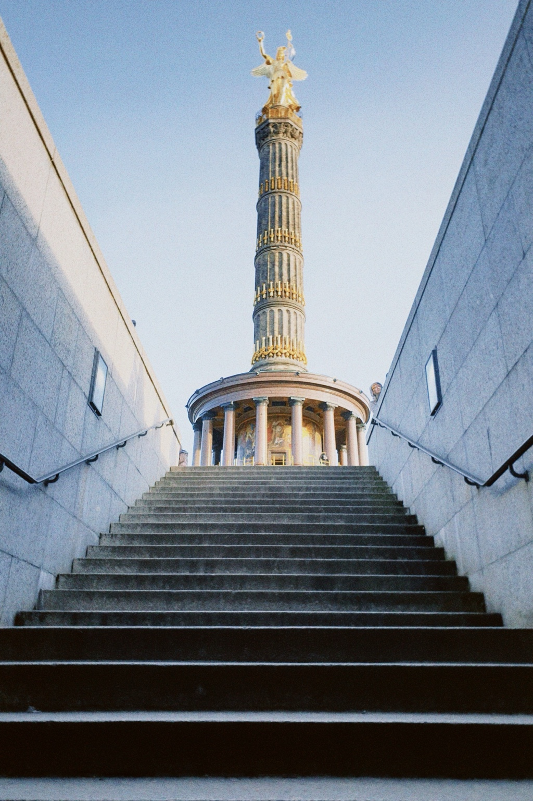
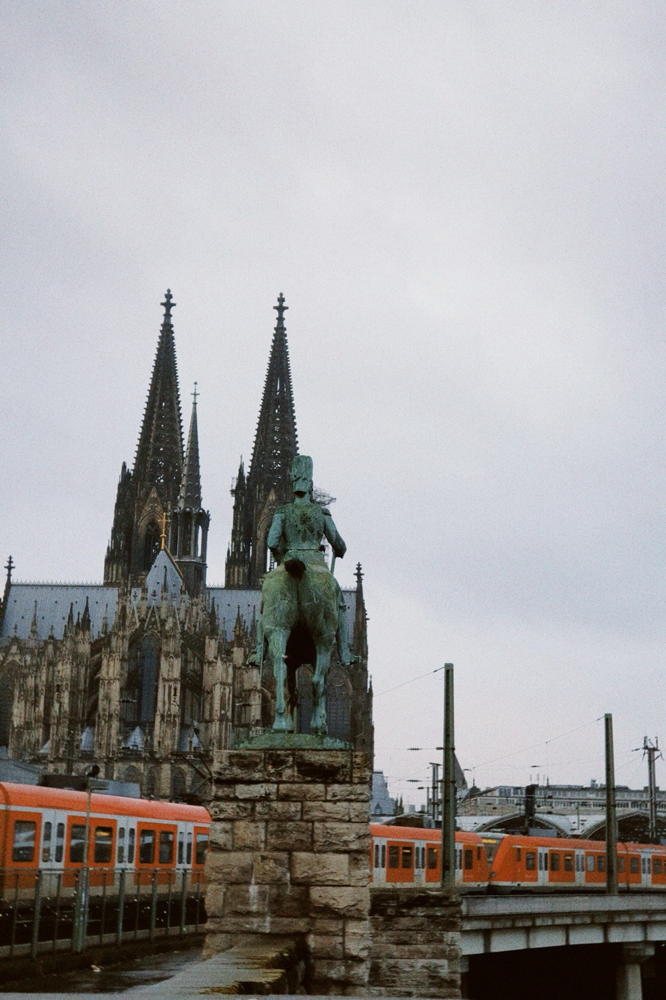
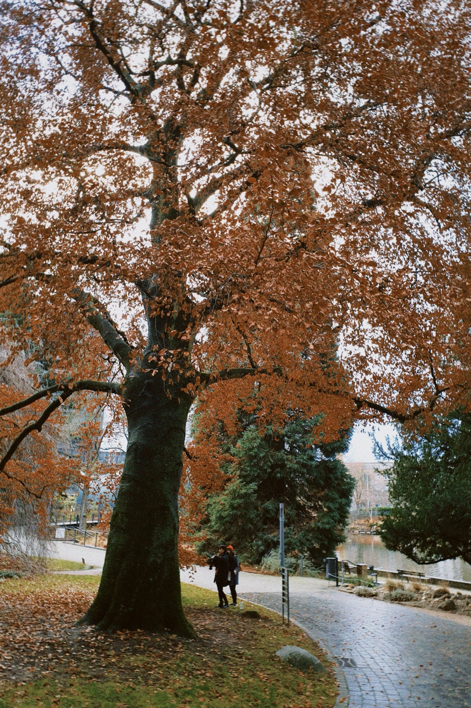
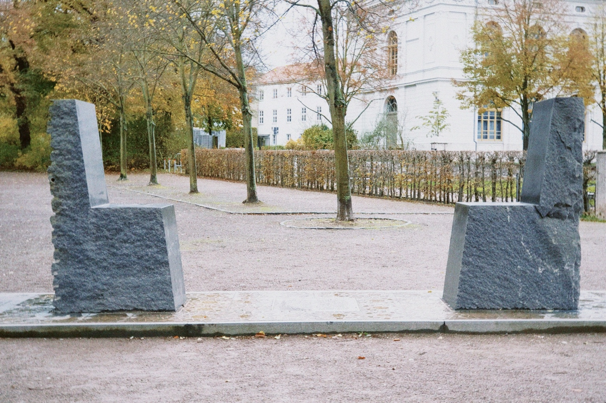

Rasool Fattahi Photography Archive
Photography by Rasool Fattahi, documenting people, places, street scenes and everyday life in Germany, Iran and beyond.

Bam Palm Grove
Bam, Iran, 2023. Documentary photography of a palm grove and rural life.

IKMZ Library, Cottbus
Cottbus, Germany, 2023. Photography of modern architecture.

Wenceslas Square at Night
Prague, Czech Republic, 2023.

Prague at Night
Prague, Czech Republic, 2023.

Foggy Street, Nordhausen
Nordhausen, Germany, 2022.

Hamburg Speicherstadt
Hamburg, Germany, 2022.

Berlin Victory Column
Berlin, Germany, 2022.

Cologne Cathedral and Equestrian Monument
Cologne, Germany, 2022.

Autumn Tree, Frankfurt
Frankfurt, Germany, 2022.

Hafez–Goethe Monument, Weimar
Weimar, Germany, 2022.